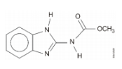
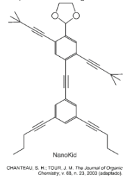
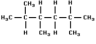
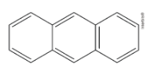
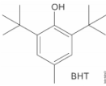

// QUIZ · INTRODUÇÃO
Teste seus conhecimentos
-
Questão 01
Recentemente, os produtores de laranja do Brasil foram surpreendidos com a notícia de que a exportação de suco de laranja para os Estados Unidos poderia ser suspensa por causa da contaminação pelo agrotóxico carbendazim, representado a seguir.

De acordo com a estrutura, afirma-se que o carbendazim possui:
-
Questão 02
As moléculas de nanoputians lembram figuras humanas e foram criadas para estimular o interesse de jovens na compreensão da linguagem expressa em fórmulas estruturais, muito usadas em química orgânica. Um exemplo é o NanoKid, representado na figura:

Em que parte do corpo do NanoKid existe carbono quaternário?
-
Questão 03
Observe a fórmula a seguir.

As quantidades totais de átomos de carbono primário, secundário e terciário são, respectivamente:
-
Questão 04
A fórmula estrutural abaixo representa o antraceno, substância importante como matéria-prima para a obtenção de corantes.

Examinando-se essa fórmula, nota-se que o número de átomos de carbono na molécula do antraceno é:
-
Questão 05
O BHT é um importante antioxidante sintético utilizado na indústria alimentícia.

Sobre o BHT, é correto afirmar que ele apresenta: